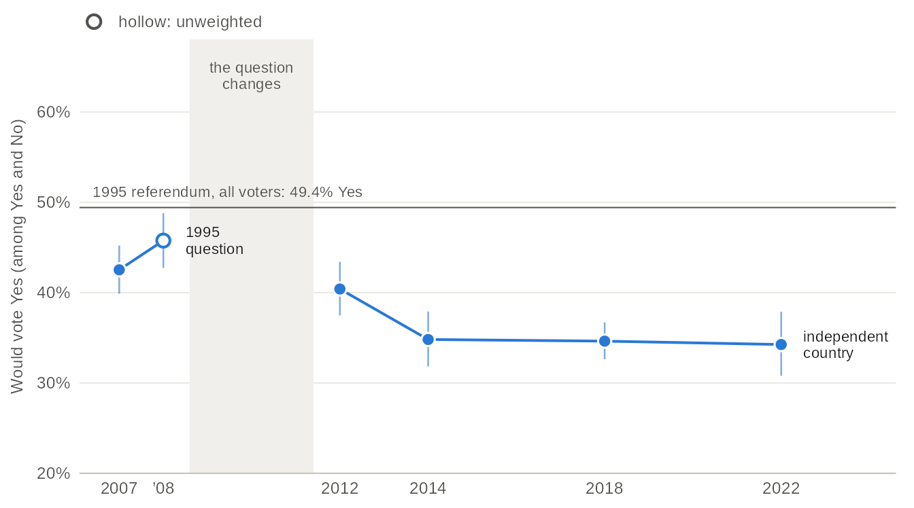
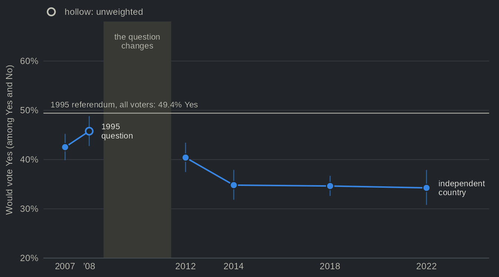
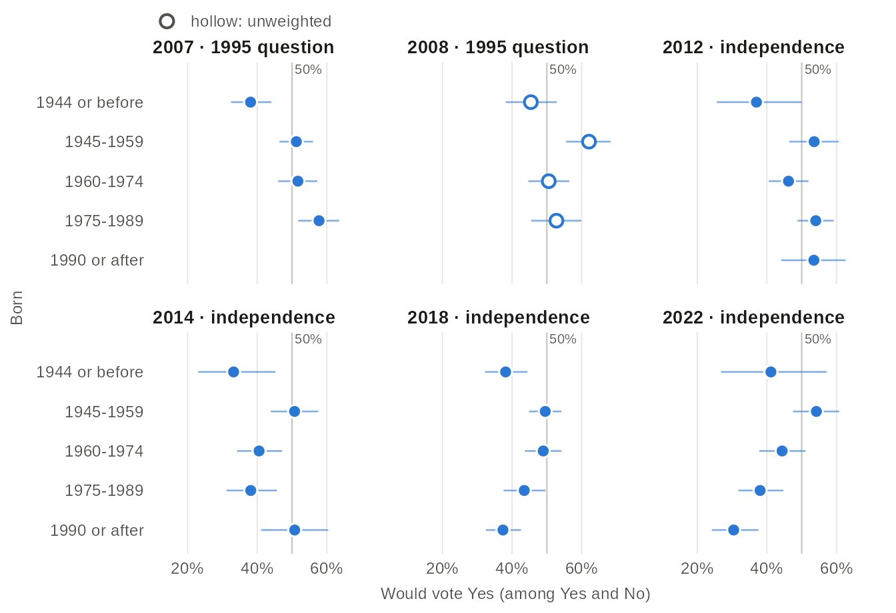
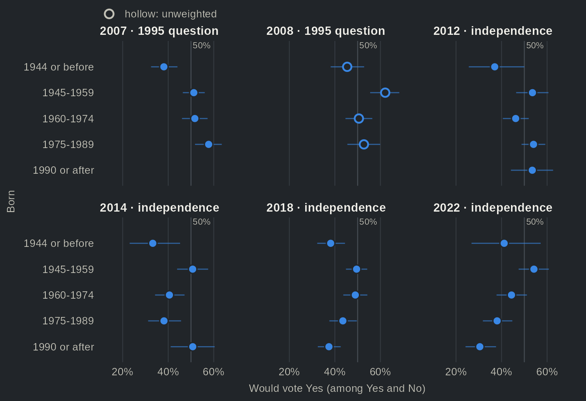
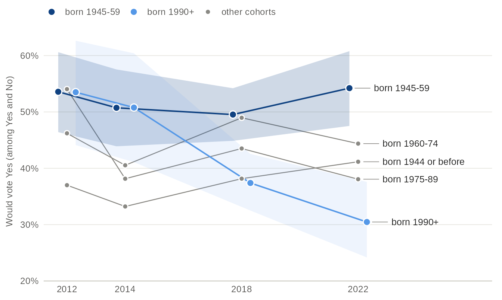
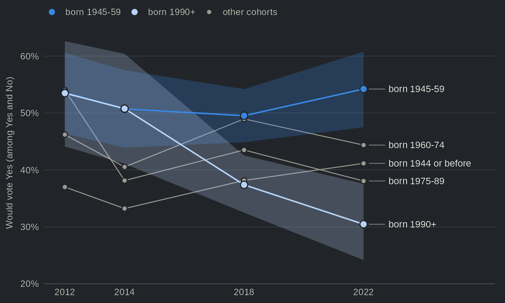
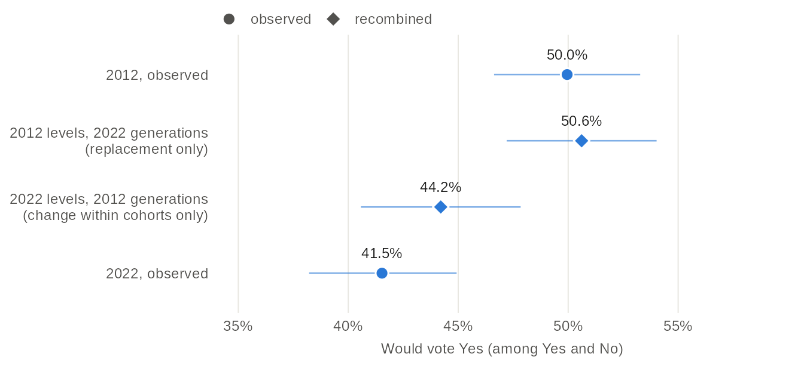
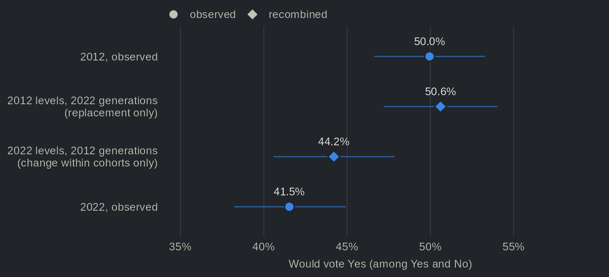

Are young Quebecers still the most pro-independence? Support for independence by cohort, 2007-2022
Source:vignettes/articles/sovereignty-generations.Rmd
sovereignty-generations.RmdFor a long time, the sovereignty project was thought to have time on its side. On this older view, the young voted Yes in greater numbers than their elders, and each new generation would add to the Yes camp. Whether that age gap reflects generations or the life cycle has been studied in its own right (Dufresne, Tessier and Montigny 2019). A newer view points the other way. Mahéo and Bélanger (2018) showed that the decline of the Parti Québécois (PQ) in 2014 was concentrated among millennials, who were less inclined to see sovereignty as a priority, and Daoust and Gareau-Paquette (2024) note that the shrinking electoral weight of the baby boomers could alter the cleavages that structure Quebec politics. On this newer view, the young have turned away from independence, and generational replacement, the arrival of new cohorts as older ones leave the electorate, now works against the Yes side.
The PQ vote does not tell us whether support for independence itself has followed the same path. Nor does it tell us where the change comes from: one generation replacing another, or change within the generations themselves. The Quebec Election Studies allow us to follow francophone birth cohorts from 2007 to 2022 and to ask both questions. Since each study interviews new people, we follow cohorts, not individuals.
In 2007, francophones born from 1975 to 1989 were the cohort most likely to vote Yes: 58% would have voted Yes to the 1995 question, compared to 38% of those born in 1944 or before. In 2022, francophones born in 1990 or after were the least likely: 30% would vote Yes to an independent country, compared to 54% of those born from 1945 to 1959, roughly the baby boomers. In other words, the generation gap did not close; it reversed. The newer view is thus right about the level, but less so about the mechanism. Depending on the year whose levels we hold fixed, generational replacement accounts for between none and 2.7 of the 8.5 points lost among francophones since 2012. Most of the decline happened within the cohorts.
The change of question in 2012


Source: Quebec Election Studies, 2007 to 2022, all respondents. The 2007 and 2008 studies asked the 1995 referendum question, which offered a partnership with Canada, and asked those who did not know which way they leaned; from 2012 on, the studies asked about an independent country. The 2008 study is unweighted (hollow dot).
Table view
| Election | Study | Question | Yes, % [95% CI] | n | Weighting |
|---|---|---|---|---|---|
| 2007 | QES 2007 | The 1995 question (partnership) | 42.5 [39.9, 45.2] | 2011 | weighted |
| 2008 | QES 2008 | The 1995 question (partnership) | 45.8 [42.7, 48.8] | 1038 | unweighted |
| 2012 | QES 2012 | An independent country | 40.4 [37.5, 43.4] | 1323 | weighted |
| 2014 | QES 2014 | An independent country | 34.8 [31.8, 37.9] | 1353 | weighted |
| 2018 | QES 2018 | An independent country | 34.6 [32.6, 36.7] | 2558 | weighted |
| 2022 | QES 2022 | An independent country | 34.3 [30.8, 37.9] | 1284 | weighted |
Before comparing cohorts, a word on the question itself. The 2007 and 2008 studies asked the question of the 1995 referendum, which offered a partnership with Canada, and asked those who did not know which way they leaned. From 2012 on, the studies asked about Quebec becoming an independent country, with no such follow-up. In these studies, the first wording draws more Yes than the second. Wording has long been known to move support for sovereignty (Yale and Durand 2011), and here the change of wording also coincides with the gap between the 2008 and 2012 elections, so the levels on each side of the grey band cannot be compared. On the independence question, support among all respondents fell from 40% in 2012 to 35% in 2014, and has barely moved since (34% in 2022). For this reason, we compare cohorts within one study and one question, and we read the order of the cohorts rather than their level.
The order of the cohorts reverses


Source: Quebec Election Studies, 2007 to 2022, respondents whose mother tongue is French. The 2007 and 2008 studies asked the 1995 question, the others about an independent country: compare the order of the cohorts within a panel, not the levels across panels. The 2008 study is unweighted (hollow dots). Cohorts of fewer than 30 respondents are not drawn.
Table view
| Election | Question | Cohort | Yes, % [95% CI] | n | Weighting |
|---|---|---|---|---|---|
| 2007 | The 1995 question (partnership) | born 1944 or before | 38.1 [32.5, 44.0] | 343 | weighted |
| 2007 | The 1995 question (partnership) | born 1945-59 | 51.2 [46.4, 56.0] | 588 | weighted |
| 2007 | The 1995 question (partnership) | born 1960-74 | 51.7 [46.0, 57.3] | 406 | weighted |
| 2007 | The 1995 question (partnership) | born 1975-89 | 57.8 [51.8, 63.5] | 379 | weighted |
| 2008 | The 1995 question (partnership) | born 1944 or before | 45.4 [38.2, 52.9] | 174 | unweighted |
| 2008 | The 1995 question (partnership) | born 1945-59 | 62.1 [55.5, 68.3] | 219 | unweighted |
| 2008 | The 1995 question (partnership) | born 1960-74 | 50.5 [44.7, 56.4] | 275 | unweighted |
| 2008 | The 1995 question (partnership) | born 1975-89 | 52.7 [45.5, 59.9] | 182 | unweighted |
| 2008 | The 1995 question (partnership) | born 1990+ | n < 30 | 4 | unweighted |
| 2012 | An independent country | born 1944 or before | 37.0 [25.6, 50.0] | 62 | weighted |
| 2012 | An independent country | born 1945-59 | 53.6 [46.4, 60.6] | 214 | weighted |
| 2012 | An independent country | born 1960-74 | 46.2 [40.6, 51.9] | 327 | weighted |
| 2012 | An independent country | born 1975-89 | 54.0 [48.8, 59.2] | 374 | weighted |
| 2012 | An independent country | born 1990+ | 53.5 [44.1, 62.6] | 120 | weighted |
| 2014 | An independent country | born 1944 or before | 33.2 [23.1, 45.2] | 90 | weighted |
| 2014 | An independent country | born 1945-59 | 50.7 [43.9, 57.5] | 280 | weighted |
| 2014 | An independent country | born 1960-74 | 40.5 [34.2, 47.2] | 288 | weighted |
| 2014 | An independent country | born 1975-89 | 38.1 [31.2, 45.6] | 214 | weighted |
| 2014 | An independent country | born 1990+ | 50.8 [41.1, 60.4] | 124 | weighted |
| 2018 | An independent country | born 1944 or before | 38.2 [32.2, 44.4] | 280 | weighted |
| 2018 | An independent country | born 1945-59 | 49.5 [44.9, 54.2] | 471 | weighted |
| 2018 | An independent country | born 1960-74 | 49.0 [43.7, 54.3] | 362 | weighted |
| 2018 | An independent country | born 1975-89 | 43.5 [37.6, 49.6] | 288 | weighted |
| 2018 | An independent country | born 1990+ | 37.4 [32.5, 42.5] | 544 | weighted |
| 2022 | An independent country | born 1944 or before | 41.2 [26.8, 57.2] | 51 | weighted |
| 2022 | An independent country | born 1945-59 | 54.2 [47.5, 60.8] | 248 | weighted |
| 2022 | An independent country | born 1960-74 | 44.4 [37.8, 51.1] | 243 | weighted |
| 2022 | An independent country | born 1975-89 | 38.1 [31.8, 44.7] | 245 | weighted |
| 2022 | An independent country | born 1990+ | 30.5 [24.2, 37.6] | 215 | weighted |
First, in 2007, on the 1995 question, support falls with age: francophones born from 1975 to 1989 are 20 percentage points above those born in 1944 or before. This is the pattern the older view has in mind. The unweighted 2008 study gives a less tidy picture, as it puts those born from 1945 to 1959 first (62%). Second, in 2012 the youngest cohort no longer stands out: those born in 1990 or after (53% Yes) are level with those born from 1945 to 1959 (54%), and the cohort born from 1960 to 1974 is 8 points lower (46%). The oldest cohort, at 37%, is lower still, although it rests on only 62 respondents. Third, from 2018 on the order is reversed. In 2022, the youngest cohort is the least likely to vote Yes, 24 points below those born from 1945 to 1959 (54%, n = 248). The oldest cohort, born in 1944 or before, is below the 1945-59 cohort at every election, but its intervals are among the widest: only 51 francophones of that cohort answered in 2022.
Which cohorts changed


Source: Quebec Election Studies 2012, 2014, 2018 and 2022, respondents whose mother tongue is French, weighted. The line of the oldest cohort rests on fewer than 100 respondents in 2012, 2014 and 2022. The youngest cohort grows as new voters come of age: born 1990-1994 (aged 18 to 22) in 2012, born 1990-2004 in 2022.
Table view
| Election | Cohort | Yes, % [95% CI] | n | Weighting |
|---|---|---|---|---|
| 2012 | born 1944 or before | 37.0 [25.6, 50.0] | 62 | weighted |
| 2012 | born 1945-59 | 53.6 [46.4, 60.6] | 214 | weighted |
| 2012 | born 1960-74 | 46.2 [40.6, 51.9] | 327 | weighted |
| 2012 | born 1975-89 | 54.0 [48.8, 59.2] | 374 | weighted |
| 2012 | born 1990+ | 53.5 [44.1, 62.6] | 120 | weighted |
| 2014 | born 1944 or before | 33.2 [23.1, 45.2] | 90 | weighted |
| 2014 | born 1945-59 | 50.7 [43.9, 57.5] | 280 | weighted |
| 2014 | born 1960-74 | 40.5 [34.2, 47.2] | 288 | weighted |
| 2014 | born 1975-89 | 38.1 [31.2, 45.6] | 214 | weighted |
| 2014 | born 1990+ | 50.8 [41.1, 60.4] | 124 | weighted |
| 2018 | born 1944 or before | 38.2 [32.2, 44.4] | 280 | weighted |
| 2018 | born 1945-59 | 49.5 [44.9, 54.2] | 471 | weighted |
| 2018 | born 1960-74 | 49.0 [43.7, 54.3] | 362 | weighted |
| 2018 | born 1975-89 | 43.5 [37.6, 49.6] | 288 | weighted |
| 2018 | born 1990+ | 37.4 [32.5, 42.5] | 544 | weighted |
| 2022 | born 1944 or before | 41.2 [26.8, 57.2] | 51 | weighted |
| 2022 | born 1945-59 | 54.2 [47.5, 60.8] | 248 | weighted |
| 2022 | born 1960-74 | 44.4 [37.8, 51.1] | 243 | weighted |
| 2022 | born 1975-89 | 38.1 [31.8, 44.7] | 245 | weighted |
| 2022 | born 1990+ | 30.5 [24.2, 37.6] | 215 | weighted |
Comparing the same cohorts from one study to the next shows where the reversal comes from. Those born from 1945 to 1959, who voted in the referendums of 1980 and 1995, barely moved: between 50% and 54% would vote Yes at each election from 2012 to 2022. By contrast, the cohort born from 1975 to 1989 fell from 54% in 2012 to 38% as early as 2014, the election in which the PQ vote of millennials fell (Mahéo and Bélanger 2018). It stood at 44% in 2018 and 38% in 2022, never close to its 2012 level. The youngest cohort broke later. Still at 51% in 2014, it was at 37% in 2018 and 30% in 2022.
One could object that the young did not turn against independence, but away from the question, and that the share of Yes among those who answered Yes or No hides a rise in indecision. The data offer little support for that reading. Among all francophones born in 1990 or after who were asked the question, the share who would vote No rose from 41% in 2012 to 56% in 2022, while the share who answered neither Yes nor No went from 12% to 19%. Indecision grew, but most of the movement went to the No side.
Replacement or change within cohorts?
The reversal could come from two places. The first is replacement: the oldest cohorts shrink, new voters come of age, and the weight of each generation among those who take a side changes even if no cohort changes its answer. The second is change within cohorts: a given cohort answers differently from one election to the next. To separate the two, we use a simple counterfactual: we apply each cohort’s 2012 level of support to the cohort sizes of 2022, and the reverse.


Source: Quebec Election Studies 2012 and 2022, respondents whose mother tongue is French, weighted. The recombined estimates weight the share of Yes in each of the five birth cohorts of one study by the size of the cohorts in the other study. Cohort sizes are each cohort's share of the francophones who answered Yes or No in that study (weighted). The youngest cohort (born in 1990 or after) takes its 2012 level, that of voters aged 18 to 22, in the replacement-only row, and its 2022 level, which includes voters born from 1995 to 2004, in the row of change within cohorts.
Table view
| Estimate | Yes, % [95% CI] |
|---|---|
| 2012, observed | 50.0 [46.6, 53.3] |
| 2012 levels, 2022 generations (replacement only) | 50.6 [47.2, 54.0] |
| 2022 levels, 2012 generations (change within cohorts only) | 44.2 [40.6, 47.8] |
| 2022, observed | 41.5 [38.2, 44.9] |
Among francophones, support for independence fell by 8.5 points between 2012 and 2022, from 50.0% to 41.5%. Had each cohort kept its 2012 level, the new weight of the generations would have left support at 50.6%, practically unchanged. This is because in 2012 the larger cohorts were close to one another, so it made little difference which of them grew and which shrank. Conversely, the levels of 2022 applied to the cohort sizes of 2012 already give 44.2%. In other words, most of the decline happened within the cohorts. The same holds when we follow only francophones born from 1990 to 1994, who were 18 to 22 years old in 2012, a closed group that no newcomer joins: 53% would have voted Yes in 2012 (n = 120), compared to 32% in 2022 (n = 96). The interval of the latter is wide, from 23% to 43%, but it does not overlap that of 2012 (44% to 63%).
That said, the two mechanisms are not independent. Now that the young are less likely than their elders to vote Yes, replacement works against the Yes side, as the caveat of Daoust and Gareau-Paquette (2024) suggested: with the levels of 2022, the change in the weight of the generations since 2012 lowers support by 2.7 of the 8.5 points on its own.
Conclusion
Overall, each of the two views gets part of the story right. The older view held in 2007, when the cohort born from 1975 to 1989 was the most likely to vote Yes on the 1995 question. It no longer held in 2012, when those born in 1990 or after were level with the 1945-59 cohort, and by 2022 the order had reversed. The newer view is right about the level: support for independence is now lowest among the young and highest among those born from 1945 to 1959. It is less right about the mechanism. The decline since 2012 came mostly from net change within cohorts: depending on the year of reference, replacement accounts for between none and 2.7 of the 8.5 points lost, and it began to work against the Yes side only once the young had changed. Nor do the young form a single block. Daoust and Gareau-Paquette (2026) find that generation Z worries more about the French language than millennials do, and the youngest cohort on this page mixes the two.
The analysis has three limits. First, the samples are modest. Each study counts between 867 and 1,971 francophones who answered Yes or No, so a single cohort in a single year rests on at most about 600 respondents, and the oldest on far fewer. Second, the studies do not follow the same people: we observe cohorts, not individuals, changing. They are independent samples, drawn at different moments (2022 during the campaign, the others after the election) and in different ways (by telephone in 2008, online from 2012 on), so change within a cohort also carries these differences. The youngest cohort of 2022 also includes voters who were not yet adults in 2012, which is why we followed those born from 1990 to 1994 on their own. Third, the page describes cohorts; it does not explain why they changed. The period since 2014 also saw the rise of the Coalition avenir Québec (CAQ) and Québec solidaire and, in 2022, of the Parti conservateur du Québec, as well as new issues. A cohort that turned away from independence in its twenties can come back to it, and the next Quebec Election Studies will show whether the reversal is a lasting trait of the younger generations or a moment in their political life.
Going further
- Daoust, Jean-François, and Thomas Gareau-Paquette. 2024. “Is Quebec independence still key in making sense of Canadian elections? A longitudinal analysis (2000–2021).” Regional & Federal Studies 34 (5): 781–806. https://doi.org/10.1080/13597566.2023.2233422
- Daoust, Jean-François, and Thomas Gareau-Paquette. 2026. “De plus en plus inquiets : qui sont les Québécois qui considèrent le français comme menacé et quelles en sont les conséquences électorales?” Revue canadienne de science politique / Canadian Journal of Political Science 59 (1): 61–80. https://doi.org/10.1017/S0008423925100942
- Dufresne, Yannick, Charles Tessier, and Eric Montigny. 2019. “Generational and life-cycle effects on support for Quebec independence.” French Politics 17 (1): 50–63. https://doi.org/10.1057/s41253-019-00083-9
- Mahéo, Valérie-Anne, and Éric Bélanger. 2018. “Is the Parti Québécois bound to disappear? A study of the current generational dynamics of electoral behaviour in Quebec.” Canadian Journal of Political Science 51 (2): 335–356. https://doi.org/10.1017/S0008423917001147
- Yale, François, and Claire Durand. 2011. “What did Quebeckers want? Impact of question wording, constitutional proposal and context on support for sovereignty, 1976–2008.” American Review of Canadian Studies 41 (3): 242–258. https://doi.org/10.1080/02722011.2011.594517
About the data
- Studies. One Quebec Election Study per election, 2007 to 2022. The 1998 polls did not ask the year of birth, and the panels that interviewed at the same elections are left out, so that each election counts once.
- Question. The share of Yes among those who would vote Yes or No, in a referendum on Quebec becoming an independent country (2012 to 2022) or on the 1995 question, which offered a partnership with Canada (2007, 2008; those who did not know were asked which way they leaned). Those who would not vote, did not know or refused are left out of the share, except in the paragraph on indecision.
- Cohorts and language. Birth cohorts come from the year of birth. Francophones are respondents whose mother tongue is French. In 2007, 2014 and 2022, those who gave two mother tongues are left out (the 2012 and 2018 files have no such answer). The 2018 study also interviewed people aged 16 and 17; they are kept, in the youngest cohort.
- Timing and weights. The 2022 study asked the question during the campaign, the others after the election. Each study is weighted, except the 2008 study, which is unweighted (hollow dots).
- Reproducing the page. The data come from one call:
h <- qes_harmonize(
studies = qz_studies,
targets = c("sov_support", "birth_year", "lang_mother"),
missing = "reasons", quiet = TRUE
)